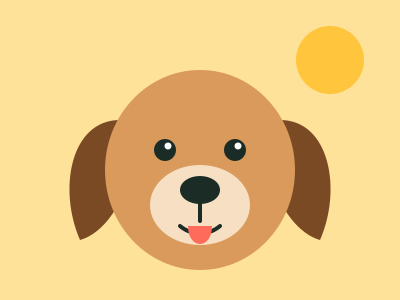
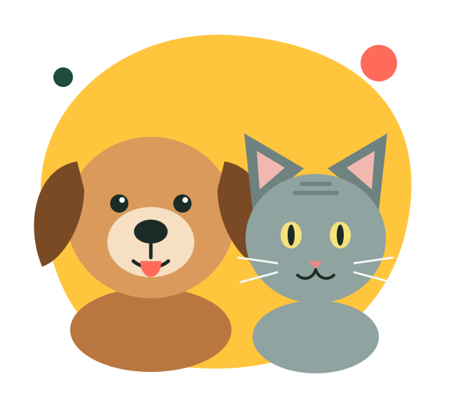
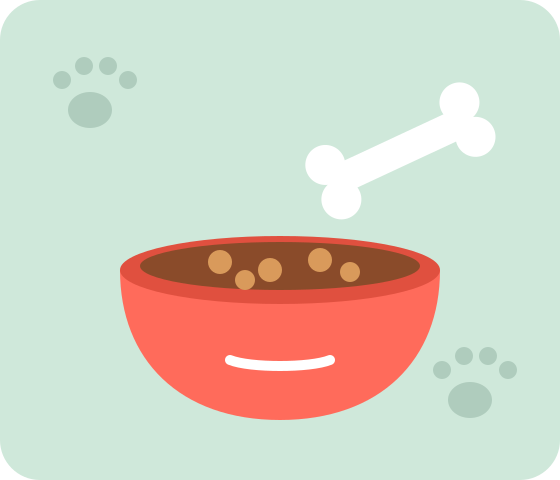
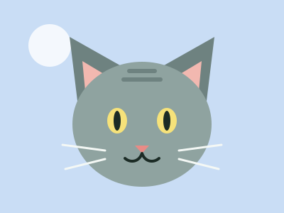
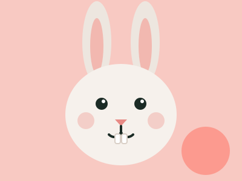

Собака
Преданный друг для активных людей. Нужны прогулки и внимание каждый день.
Рассказываем, как выбрать питомца и сделать так, чтобы вам было хорошо вдвоём.
Выбрать питомца

Мы собрали информацию о кошках, собаках и кроликах: сколько времени они требуют и чем их кормить.
Если вы не уверены, кого выбрать, посмотрите раздел «Питомцы».

Преданный друг для активных людей. Нужны прогулки и внимание каждый день.

Самостоятельная и ласковая. Подойдёт тем, кто часто бывает на учёбе или работе.

Тихий и любопытный. Ему нужны просторная клетка и сено каждый день.
Корм по возрасту и чистая вода всегда.
Прививки по графику и осмотр раз в год.
Хотя бы полчаса в день играйте с питомцем.
Место для сна, где никто не потревожит.
Многие животные в приютах уже привиты. Приходите знакомиться — выбор часто делает сам питомец.
Написать в приют